STORY
An attack on Australia's omnium fusion core affected the Outbook in a way that became irradiated with waste and became a harsh, unlivable environment. However, few survived, and they took up the name of the Junkers; a lawless, cutthroat society that thrived in the shadows. One of them, Junkrat, resorted to reclaimed metal for body parts in order to ensure his survival. Driven slightly mad by the radiation, Junkrat became fond of explosives and quickly turned it into an obsession.
Among the bones of the omnium, Junkrate discovered a secret, which soon brought upon a target on his back. Chased by bounty hunters, gangs, and opporunists, Junkrat made a deal with Roadhog who agreed to serve as his body guard for half the cut of their spoils. With a dynamite duo, Junkrat left behind the Outback and began an international crime spree leaving nothing but destruction and chaos in their path.
HERO OVERVIEW
Role: Defense
Junkrat's arsenal is equppied with a Frag Launcher that springs bouncing grenades to help crowd control enemies. His kit is also equppied with Concussion Mines that send either opponents flying, or himself flying to achieve a better vantage point to shower his grenades. Junkrat can also set Steel Traps in his path to stop enemies dead in their track and possibly set them up for elimination.
ABILITIES

Frag Launcher
Sends out bouncing grenades that explode to strike down enemies and tear through enemy barriers.

Concussion Mine
An explosive device that can be set and triggered at any time to inflict damage on enemies or send them flying. It can alternatively be used to Junkrat's advantage by propelling himself into the air to gain a better angle on his opponents.

Steel Trap
Can be placed hidden among the battlefield to trap enemies in their tracks and set them up for vulnerable damage.

Total Mayhem
Upon death, Junkrat's deranged sense of human continues and leaves behind live grenades to wound nearby enemies.

Rip-Tire
A mobile and remote controlled wheel armed and ready to blow enemies to shreds. It can climb walls and leap over obstacles make it difficult to avoid during crucial team battles. Junkrat however is susceptible to danger since he himself is immobilized while controlling his tire.